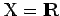
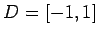
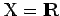
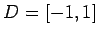
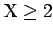
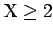
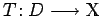
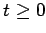

Schaudersches Fixpunktprinzip
Sei T ein nichtlinearer Operator, der auf einer Menge D eines BANACH-Raumes  definiert ist und in abbildet. Die nichttriviale Frage nach der Existenz wenigstens einer Lösung der Gleichung x = T(x) wird wie folgt beantwortet: Ist  und , dann hat bekanntlich jede stetige Funktion, die D in D abbildet, einen Fixpunkt in
definiert ist und in abbildet. Die nichttriviale Frage nach der Existenz wenigstens einer Lösung der Gleichung x = T(x) wird wie folgt beantwortet: Ist  und , dann hat bekanntlich jede stetige Funktion, die D in D abbildet, einen Fixpunkt in  . Ist ein beliebiger endlichdimensionaler normierter Raum (dim), dann gilt der BROUWERsche Fixpunktsatz.
. Ist ein beliebiger endlichdimensionaler normierter Raum (dim), dann gilt der BROUWERsche Fixpunktsatz.
- Brouwerscher Fixpunktsatz:
- Sei D eine nichtleere abgeschlossene beschränkte konvexe Teilmenge eines endlichdimensionalen normierten Raumes. Ist T ein stetiger Operator, der D in sich abbildet, dann hat T (wenigstens) einen Fixpunkt in .
Im Falle eines beliebigen unendlichdimensionalen BANACH-Raumes erhält man die Antwort über den SCHAUDERschen Fixpunktsatz.
- Schauderscher Fixpunktsatz:
- Sei D eine nichtleere abgeschlossene beschränkte konvexe Teilmenge eines BANACH-Raumes. Ist der Operator  stetig und kompakt (also vollstetig) und bildet D in sich ab, dann hat T (wenigstens) einen Fixpunkt in .
Mit Hilfe dieses Satzes kann man beispielsweise zeigen, daß das Anfangswertproblem (12.70) für  immer noch eine lokale Lösung besitzt, wenn die rechte Seite lediglich als stetig vorausgesetzt wird.